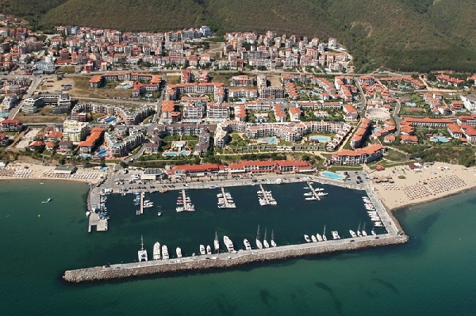

Намира се в Свети Влас. Пригодено е за около 300 съда и предлага разнообразни услуги за посетителите. Условията са подходящи и за домуване, и за временен престой.

Защитено е при повечето случаи на силен вятър, освен от югозапад. Освен за стоянка на яхти, се използва и за малки корабчета, а в миналото и за комети.
Това е луксозно яхтено пристанище с обслужване и разнообразни услуги. На разположение на клиентите има и плаващ бар.
Намира се в рамките на търговското пристанище. Разполага с различни екстри, включително предоставя ремонтни дейности и гранична контрола.
Старият град има две марини - Яхтено пристанище „Марина Созопол" и Яхтено пристанище „Марина Порт Созопол", напълно оборудвани. В блиост има яхтен магазин. И двете пристанища са подходящи и за целогодишно ползване.
Поема до 37 съда, като е подходящо и за целогодишно домуване, и за краткотрайно акостиране. Предстои да бъде довършено. От него се извършва и наемане на яхти.
На практика в момента кеят при бившата резиденция не е подходящ за яхти, защото мястото е много плитко. Има възможност за връзване на съдове с по-малко газене. Стоянката е подходяща за временно швартоване.
Кеят му не е голям и не позволява едновременно връзване на много съдове, но все пак има възможност за приставане на яхти. Иначе се ползва предимно от рибарски лодки.
Макар и да е голямо и добре оборудвано, разполагащо и с големи хангари, пристанището в Китен все още не притежава регистрация. Към него има и хотел, както и възможност за бункероване с гориво.